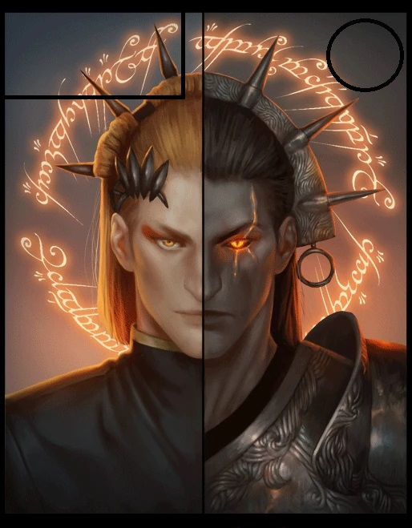

Sauron Redivivus
Есть только один властелин кольца, он один способен подчинять его себе. И он не делится властью.
Маркированный список гиперссылок
- Абсолютная гиперссылка на главную страницу сайта kubsu.ru
- Абсолютная гиперссылка на главную сайта kubsu.ru в протоколе https;
-

- Сокращенная ссылка на внутреннюю страницу;
- Сокращенная ссылку на главную страницу;
- Ссылка на форму
- Ссылка с тремя параметрами в URL:http://example.com/search?query=books&sort=asc&page=2;
- Ссылка с параметром id: https://www.example.com/products?cat=electronics&id=456;
- Относительная ссылка на страницу в текущем каталоге>
- Относительная ссылка в каталоге about>
- Относительная ссылка на страницу в каталоге уровнем выше текущего
- Относительная ссылка на страницу в каталоге на два уровня выше текущего
-
Для получения доп информации перейдите на веб-сайт
- Перейти к этому разделу
- 
- Пустой href
- https://kubsu.ru/
- Запрет поисковикам
- ссылка запрещенная для индексации поисковиками
- часть страницы, индексирования которой нужно запретить
- ссылкa на файл на сервере FTP с авторизацией;
Таблица
| Имена | Имена/Прозвища | Прозвища | Титулы |
|---|---|---|---|
| Равнозначно великий и ужасный | |||
| Майрон ― настоящее имя Саурона. С квенья переводилось как «Восхитительный». | Саурон ― имя, с квенья переводящееся как «Отвратительный». | Властелин Колец ― прозвище Саурона, полученное им после создания Единого Кольца. | Наместник Мелькора ― звание Саурона при Мелькоре. |
| Аулендиль ― имя, которым Саурон назывался в Эрегионе. С квенья переводилось как «Слуга Аулэ» | Саурон-Лжец ― прозвище, которое дал Саурону в Нуменоре Амандиль | Зигур ― прозвище, которое Саурон получил от нуменорцев; с адунаика переводится как «Чародей» | Тёмный Властелин ― титул Саурона, наследованный у Мелькора/Моргота, первого Тёмного Властелина в Арде; |
| Артано ― имя, которым Саурон назывался в Эрегионе. С квенья переводилось как «Благородный Кузнец» | Тень ― прозвище Саурона, возникшее из-за ассоциации с тенью. | Некромант ― прозвище Саурона, полученное в годы пребывания в Дол-Гулдуре | Король Людей и Властелин Земли ― титулы, взятые Сауроном в годы владычества с Средиземье во Вторую Эпоху. |
| Аннатар ― имя, которым Саурон назывался в Эрегионе. С квенья переводилось как «Владыка Даров» | Саурон Великий ― прозвище, которым нарёк Саурона Гэндальф в разговоре с Фродо; | Волк-Саурон ― прозвище Саурона, полученное им в бою с Хуаном. | Властелин Мордора ― титул Саурона как владыки земель Мордора. |
| Гортаур ― имя, с синдарина содержащее корень Þaur (Отвратительный) и приставку gor (Ужас). | Враг ― прозвище Саурона, как врага непорабощённых народов. Аналогичное прозвище принадлежало Морготу; | Саурон Redivivus (от лат. Воскресший) ― прозвище, которым Дж. Р. Р. Толкин называет Саурона в годы его появления в Лихолесье. | Властелин Тёмных Земель ― титул Саурона как владыки земель Мордора. |